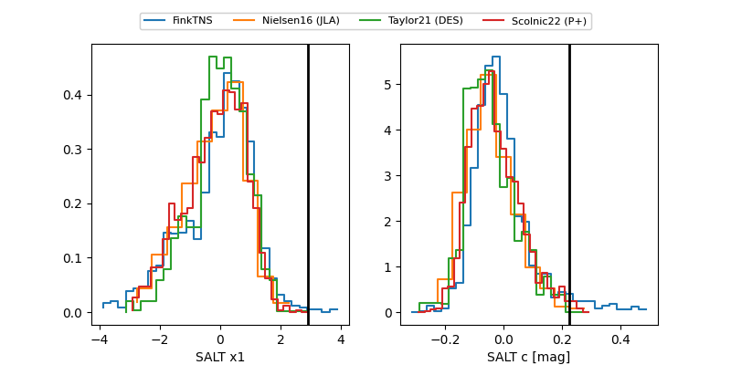

FINK: ZTF25abmrtwm
Lasair: ZTF25abmrtwm
ALeRCE: ZTF25abmrtwm
TNS: 2025wgx
YSE: 2025wgx
ZTF25abmrtwm (ztf,fink)
2025wgx (tns,yse)
equatorial (ra, dec) = (311.7353,-11.98982)
galactic (l, b) = (34.9721,-31.00657)

last ztfg=19.86, ztfr=19.58
2 ztfg, 5 ztfr detections